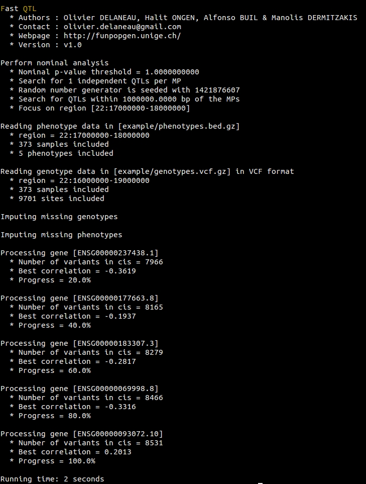

Default nominal pass
To perform a simple nominal pass on the example data set, use:
fastQTL --vcf genotypes.vcf.gz --bed phenotypes.bed.gz --region 22:17000000-18000000 --out nominals.default.txt.gz
This produces this output on the screen when everything works correctly:
Association testing parameters
Associations between genotype dosages and phenotype quantifications are measured with linear regressions (here), similar to the R/lm function. This model assumes that phenotypes are normally distributed. If your phenotype quantifications are not normally distributed, you can force them to match normal distributions N(0, 1) by using:
fastQTL --vcf genotypes.vcf.gz --bed phenotypes.bed.gz --region 22:17000000-18000000 --out nominals.quantile.txt.gz --normal
To change the cis-window size (i.e. the maximal distance spanned by phenotype-variant pairs to be considered for testing) from default value 1e6 bp to 2e6 bp, use:
fastQTL --vcf genotypes.vcf.gz --bed phenotypes.bed.gz --region 22:17000000-18000000 --out nominals.window2Mb.txt.gz --window 2e6
To change the seed of the random number generator, which is particularly useful to replicate an analysis, use:
fastQTL --vcf genotypes.vcf.gz --bed phenotypes.bed.gz --region 22:17000000-18000000 --out nominals.seed.txt.gz --seed 123456789
To add covariates in the linear regressions used for association testing, use:
fastQTL --vcf genotypes.vcf.gz --bed phenotypes.bed.gz --region 22:17000000-18000000 --out nominals.cov.txt.gz --cov covariates.txt.gz
The file covariates.txt.gz needs to be formatted as described here.
Excluding/Including data
To exclude samples, variants, phenotypes or covariates from the analysis, you can use one of these options:
- To exclude samples: --exclude-samples file.exc
- To exclude variants: --exclude-sites file.exc
- To exclude phenotypes: --exclude-phenotypes file.exc
- To exclude caovariates: --exclude-covariates file.exc
For instance, if you want to ignore 3 samples when analyzing the example data set, first create a text file containing the IDs of the samples to be excluded, called here file.exc:
UNR1
UNR2
UNR3
Then, add the following option to the command line:
fastQTL --vcf genotypes.vcf.gz --bed phenotypes.bed.gz --region 22:17000000-18000000 --out nominals.sub.txt.gz --exclude-samples file.exc
Similarly to these 4 options for data exclusion, you can also specify the set of samples, variants, phenotypes and covariates you wich to include in the analysis using the options: --include-samples, --include-sites, --include-phenotypes and --include-covariates, respectively.
Parallelization
As a first way to facilitate parallelization on compute cluster, we developed an option to run the analysis for just a chunk of molecular phenotypes. The region of interest is specified with the standard chr:start-end format. FastQTL extracts all phenotypes in this region, then all genotypes given the specified cis-window size and finally performs the analysis for this data subset. For instance, to a nominal pass only for molecular phenotypes located on chr22 between coordinates 18Mb and 20Mb, use:
fastQTL --vcf genotypes.vcf.gz --bed phenotypes.bed.gz --region chr22:18000000-20000000 --out nominals.18M20M.txt.gz
This strategy is quite similar to what is commonly used for genotype imputation, where only small chunks of data are imputed one at a time in seperate jobs. However in practice, it is usually quite complicated to properly split the genome into a given number of chunks with correct coordinates. To facilitate this, we embedded all coordinates into a chunk-based system such that you only need to specify the chunk index you want to run. Then, splitting the genome into chunks, extraction of data, and analysis are automatically performed. For instance, to run analysis on chunk number 25 when splitting the example data set (i.e. genome) into 30 chunks, just run:
fastQTL --vcf genotypes.vcf.gz --bed phenotypes.bed.gz --out nominals.chunk25.txt.gz --chunk 25 30
If you want to submit the whole analysis into 30 jobs on your compute cluster, just run:
for j in $(seq 1 30); do
echo "fastQTL --vcf genotypes.vcf.gz --bed phenotypes.bed.gz --out nominals.txt.gz --chunk $j 30" | qsub
done
Here qsub needs to be changed according to the job submission system used (bsub, psub, etc...).
Finally, we also developed a slightly different parallelization option that, this time, allows to generate all required command lines and write them into a file. Let take the same example as before, that is splitting the analysis into 10 jobs:
fastQTL --vcf genotypes.vcf.gz --bed phenotypes.bed.gz --out results --commands 10 commands.10.txt
Now if you look at the file commands.10.txt, you'll see this:
fastQTL --vcf genotypes.vcf.gz --bed phenotypes.bed.gz --out nominals.22:17517460-20748406 --region 22:17517460-20748406
fastQTL --vcf genotypes.vcf.gz --bed phenotypes.bed.gz --out nominals.22:36424473-39052635 --region 22:36424473-39052635
fastQTL --vcf genotypes.vcf.gz --bed phenotypes.bed.gz --out nominals.22:24407642-30163001 --region 22:24407642-30163001
fastQTL --vcf genotypes.vcf.gz --bed phenotypes.bed.gz --out nominals.22:42017123-45704850 --region 22:42017123-45704850
fastQTL --vcf genotypes.vcf.gz --bed phenotypes.bed.gz --out nominals.22:20792146-22307210 --region 22:20792146-22307210
fastQTL --vcf genotypes.vcf.gz --bed phenotypes.bed.gz --out nominals.22:39052641-39915701 --region 22:39052641-39915701
fastQTL --vcf genotypes.vcf.gz --bed phenotypes.bed.gz --out nominals.22:30163352-36044443 --region 22:30163352-36044443
fastQTL --vcf genotypes.vcf.gz --bed phenotypes.bed.gz --out nominals.22:45809500-51222092 --region 22:45809500-51222092
fastQTL --vcf genotypes.vcf.gz --bed phenotypes.bed.gz --out nominals.22:22337213-24322661 --region 22:22337213-24322661
fastQTL --vcf genotypes.vcf.gz --bed phenotypes.bed.gz --out nominals.22:39928860-42017101 --region 22:39928860-42017101
Where region coordinates are automatically determined given the total number of chunks specified. You can then submit all these commands on a cluster using:
while read c; do
echo $c | qsub
done < commands.10.txt
Output file format of a nominal pass
Once the analysis completed and all output file collected, you can easily concat and compress all of them into a single output file in order to ease downstream analysis with:
zcat nominals.chunk*.txt.gz | gzip -c > nominals.all.chunks.txt.gz
After having performed a nominal pass on the data and concatenating the output files, you end up with a file with 5 columns and N lines corresponding to all N phenotype-variant pairs tested. For instance, if you tested 1,000 molecular phenotypes and for each there are 1,000 variants in cis, it means that you'll get 1,000,000 lines in the output files. Hereafter a short example:
ENSG00000237438.1 snp_22_18516782 999322 0.602225
ENSG00000237438.1 snp_22_18516997 999537 0.796906
ENSG00000237438.1 snp_22_18517084 999624 0.20782
ENSG00000237438.1 snp_22_18517312 999852 0.196428
ENSG00000177663.8 snp_22_16566314 -999530 0.77477
ENSG00000177663.8 snp_22_16566347 -999497 0.57854
ENSG00000177663.8 snp_22_16566779 -999065 0.379964
ENSG00000177663.8 snp_22_16580254 -985590 0.525688
ENSG00000177663.8 snp_22_16581158 -984686 0.329372
ENSG00000177663.8 snp_22_16581386 -984458 0.461748
In this file, the 4 columns correspond to:
- ID of the tested molecular phenotype (in this particular case, the gene ID)
- ID of the tested variant (in this case a SNP)
- Distance between the variant and the phenotype in bp
- The nominal p-value of association
To make this file much smaller, you can output only significant phenotype-variant pairs with a pvalue below 0.001 for instance. To do so, use:
fastQTL --vcf genotypes.vcf.gz --bed phenotypes.bed.gz --region 22:17000000-18000000 --threshold 0.001 --out nominals.threshold.txt.gz